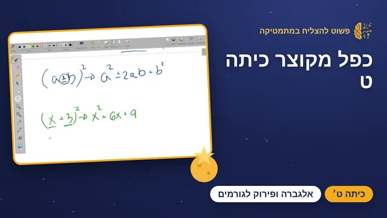
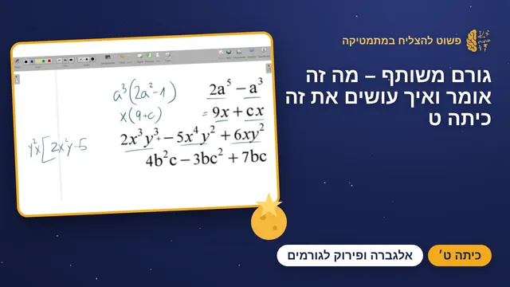
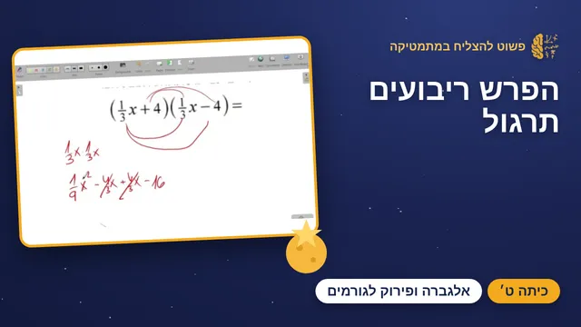
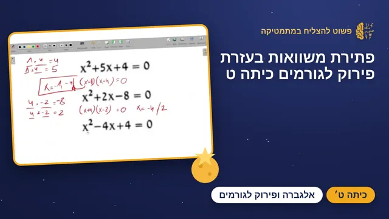
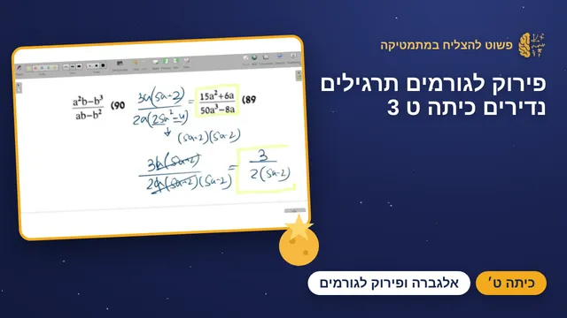
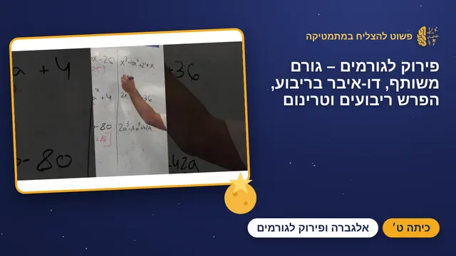
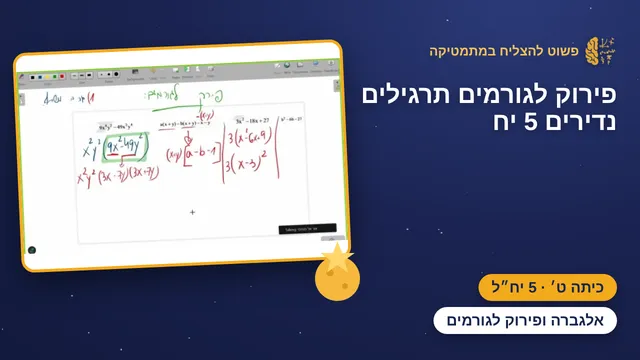
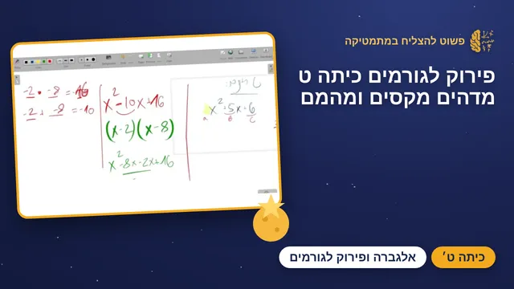
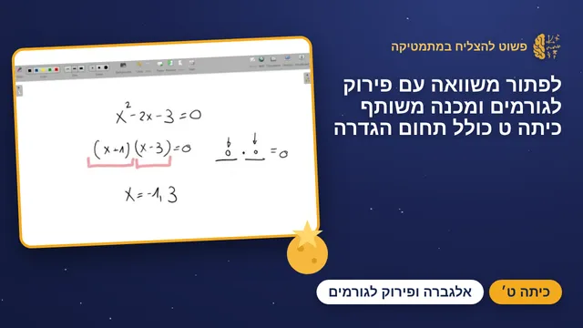

פשוט להצליח במתמטיקה › כל הנושאים › אלגברה ופירוק לגורמים
אלגברה ופירוק לגורמים – סרטוני הסבר ותרגול
19 סרטוני הסבר ותרגול בנושא אלגברה ופירוק לגורמים – לכיתה ז׳, כיתה ח׳, כיתה ט׳, שאלון 571. כל נושא מוסבר מהקל אל הקשה: קודם הרעיון, אחר כך תרגילים, ובסוף שאלות בסגנון בגרות. הכול בחינם, בשיטת "פשוט להצליח".
רוצים לעקוב אחרי ההתקדמות?נרשמים בחינם, וכל סרטון שראיתם מסומן ✓. ממשיכים מכל מכשיר.
הצטרפות בחינם ←אלגברה ופירוק לגורמים – כיתה ז׳ כל הנושאים של כיתה ז׳ ←

אלגברה ופירוק לגורמים – כיתה ח׳ כל הנושאים של כיתה ח׳ ←

אלגברה ופירוק לגורמים – כיתה ט׳ כל הנושאים של כיתה ט׳ ←
 פירוק לגורמים כיתה ט כולל כל ההסברים
פירוק לגורמים כיתה ט כולל כל ההסברים
כפל מקוצר כיתה ט פירוק לגורמים כיתה ט האלופים
פירוק לגורמים כיתה ט האלופים הפרש ריבועים הסבר נדיר ביותר כיתה ט
הפרש ריבועים הסבר נדיר ביותר כיתה ט
גורם משותף – מה זה אומר ואיך עושים את זה כיתה ט כפל מקוצר פירוק לגורמים כיתה ט
כפל מקוצר פירוק לגורמים כיתה ט
הפרש ריבועים תרגול
פתירת משוואות בעזרת פירוק לגורמים כיתה ט פירוק לגורמים תרגילים נדירים כיתה ט 2פירוק לגורמים תרגילים נדירים כיתה ט 1
פירוק לגורמים תרגילים נדירים כיתה ט 2פירוק לגורמים תרגילים נדירים כיתה ט 1
פירוק לגורמים תרגילים נדירים כיתה ט 3
פירוק לגורמים – גורם משותף, דו-איבר בריבוע, הפרש ריבועים וטרינום
פירוק לגורמים תרגילים נדירים 5 יח
פירוק לגורמים כיתה ט מדהים מקסים ומהמם הפרש ריבועים כיתה ט הקבצה א – פירוק לגורמים
הפרש ריבועים כיתה ט הקבצה א – פירוק לגורמים
לפתור משוואה עם פירוק לגורמים ומכנה משותף כיתה ט כולל תחום הגדרה